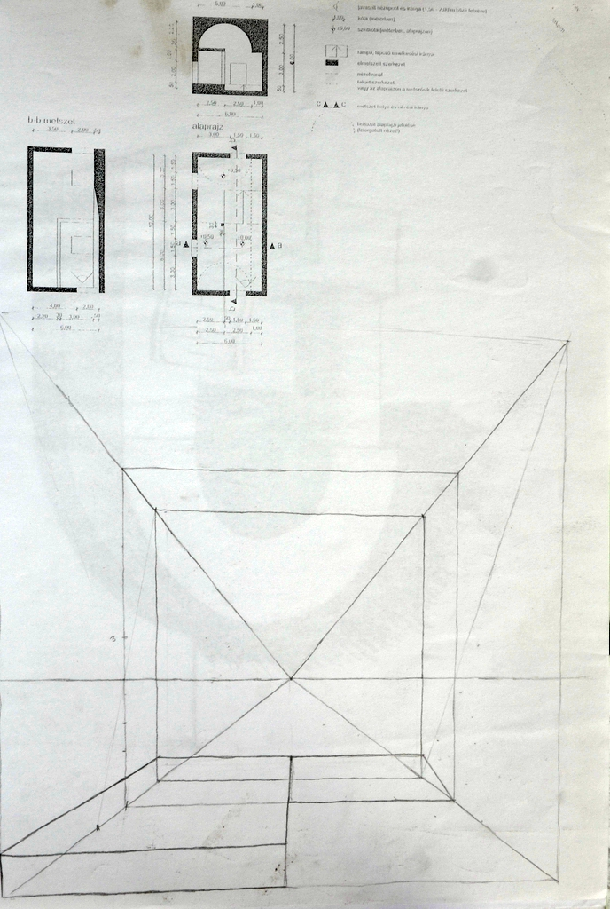
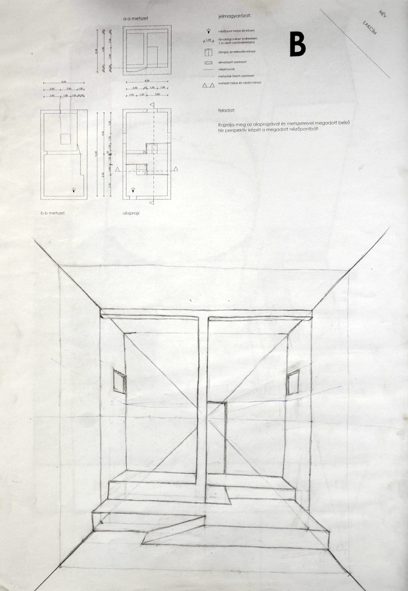
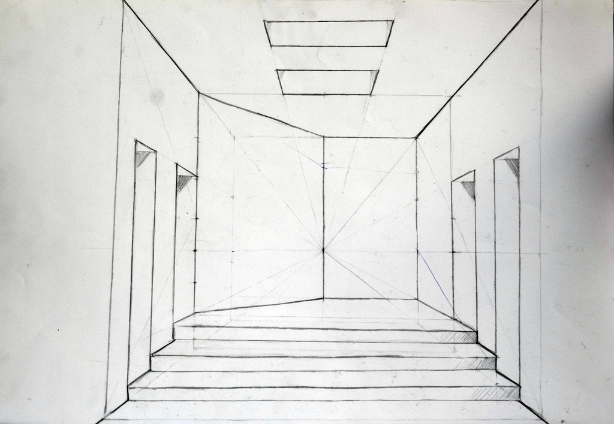
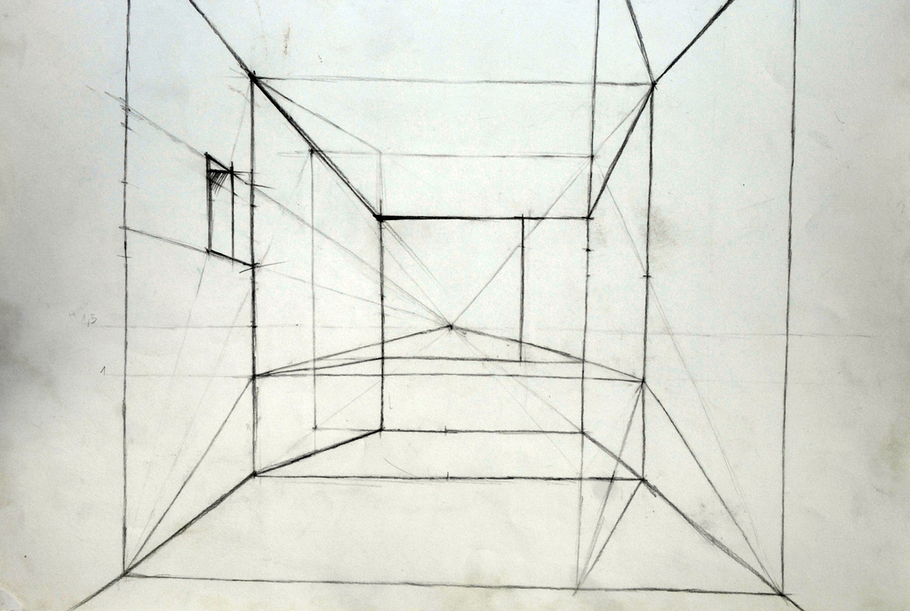

2.képcsoport
Ebben a csoportban a térrekonstrukciós rajzokat gyűjtöttem össze, melynek célja alaprajz és térmetszet alapján a tér felépítése volt.
Itt még nagyobb szükség volt a pontos térlátásra, a vizuális képzelőerőre. Rajztanulásom során ez okozta a legnagyobb nehézséget, és ezt szerettem a legkevésbé a feladatok közül.
Nehezen birkóztam meg ezekkel a feladatokkal, de már belátom, hogy nagyon fontos részét képezte a folyamatnak. Azzal, hogy többféle rajztípust kipróbáltam, szélesedett a látóköröm, és a térlátás fejlesztésének egy nagyon fontos állomását jelentették ezek a rajzok.
|  |  |  |  |